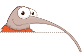
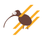
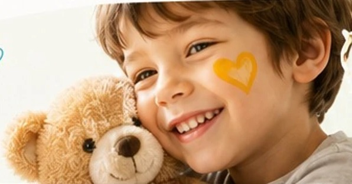

Pour un
quotidien
plus léger,
plus doux…
Des activités et des rencontres pour les enfants, adolescents et jeunes adultes confrontés à la douleur, à la maladie ou au handicap.
Découvrir nos actionsCréer des liens pour briser l’isolement.
Bienvenue
Kiwi organisation crée des activités et des événements pour les enfants, adolescents et jeunes adultes qui luttent contre la douleur, la souffrance, la maladie et le handicap.
Ces actions à caractère culturel permettent d’adoucir leur quotidien et apportent un souffle nouveau aux structures qui les encadrent.
Grâce à son travail, Kiwi aide autant les enfants et leur famille que les structures qui les accompagnent (…)
« Ensemble, allons-y œuvrons… »
Anne-Sophie Pic
Cheffe étoilée
Marraine de l’association
16 ansd’engagement
Plusieurs
centainesd’ateliers réalisés
5 établissementspartenaires
100 %des actions gratuites
pour les familles
Nos actions

Ateliers culinaires
Cuisine et pâtisserie avec de grands chefs : des moments de partage et de plaisir à l’hôpital.
Hôpitaux accueillants
Décoration et signalétique des services pour adoucir le parcours de soins et réduire le stress.
Projets innovants
BD, médiation, outils pédagogiques : mieux comprendre, accompagner et sensibiliser.
Bien-être & culture
Musique, sport adapté, médiation animale : des parenthèses de bonheur malgré la maladie.
Les dernières actualités



Ensemble,
faisons grandir les sourires
Chaque don nous permet de financer de nouveaux projets et d’apporter du bonheur aux enfants hospitalisés.
Je soutiens Kiwi OrganisationDon sécurisé – Reçu fiscal – Transparence garantie
Ils nous font confiance
◈ FEDERALY
LE BEAU
RIVAGECONDRIEU
RIVAGECONDRIEU
UNiBiO
inelysEXPERTISE & CONSEIL
/// HASLERGROUP